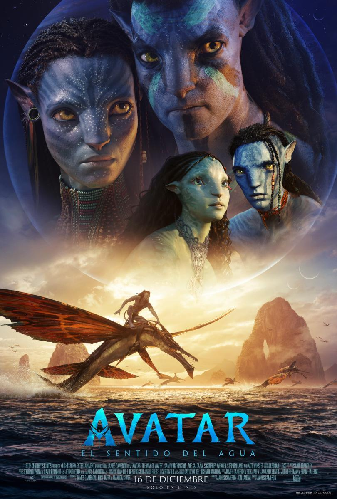

Top 10
 |
Top Gun : Maverick |
| Director/a: Joseph Kosinski |
| Duración: 131 min |
| Sinopsis: Después de más de treinta años de servicio como uno de los mejores
aviadores de la Armada, Pete "Mavericks" Mitchel (Tom Cruise) se encuentra donde
siempre quiso estar: superando los límites como un valiente piloto de pruebas y
esquivando el ascenso de rango, que no le dejaría volar emplazándolo en tierra.
Cuando es destinado a la academia de Top Gun con el objetivo de entrenar a los
pilotos de élite para realizar una peligrosa misión en territorio enemigo,
Maverick se encuentra allí con el joven teniente Bradley Bradshaw (Miles Teller),
el hijo de su difunto amigo "Goose". |
| Reparto |
| Opiniones |
|
Puñales por la espalda : el misterio de Glass Onion |
| Director/a: Rian Johnson |
| Duración: 139 min |
| Sinopsis:
Cuando el multimillonario Miles Bron (Edward Norton) invita a algunos de sus allegados
a una escapada a su isla griega privada, pronto queda claro que no todo es perfecto en
el paraíso. Y cuando alguien aparece muerto, ¿quién mejor que Benoit Blanc para desentrañar
todas las capas del misterio? |
| Reparto |
| Opiniones |
 |
The Batman |
| Director/a: Matt Reeves |
| Duración: 175 min |
| Sinopsis:
Después de dos años acechando por las calles de la ciudad como Batman (Robert Pattinson), e
infundiendo miedo en las mentes perversas de los criminales, Bruce Wayne está sumido en las
profundidades de las sombras de Gotham City. Este vigilante solitario cuenta con pocos aliados
de confianza y eso le ha llevado a convertirse en la única encarnación de la venganza entre sus
conciudadanos. Cuando un asesino apunta a la élite de Gotham con una serie de maquinaciones sádicas,
un rastro de pistas crípticas lleva a Batman a realizar una investigación en el inframundo. |
| Reparto |
| Opiniones |
|  |
Avatar: El sentido del agua |
| Director/a: James Cameron |
| Duración: 192 min |
| Sinopsis:
Más de una década después de los acontecimientos de 'Avatar', los Na'vi Jake Sully, Neytiri y sus hijos
viven en paz en los bosques de Pandora hasta que regresan los hombres del cielo. Entonces comienzan los
problemas que persiguen sin descanso a la familia Sully, que decide hacer un gran sacrificio para mantener
a su pueblo a salvo y seguir ellos con vida. |
| Reparto |
| Opiniones |
 |
The Northman |
| Director/a: Robert Eggers |
| Duración: 136 min |
| Sinopsis:
En Islandia, en pleno siglo X, un príncipe nórdico (Skarsgard) busca vengar a toda costa la muerte de su padre. |
| Reparto |
| Opiniones |
 |
Todo a la vez en todas partes |
| Director/a: Dan Kwan, Daniel Scheinert, Daniels |
| Duración: 139 min |
| Sinopsis:
Cuando una ruptura interdimensional altera la realidad, Evelyn (Michelle Yeoh), una inmigrante china en Estados Unidos, se ve envuelta en una aventura salvaje en la que solo ella puede salvar el mundo. Perdida en los mundos infinitos del multiverso, esta heroína inesperada debe canalizar sus nuevos poderes para luchar contra los extraños y desconcertantes peligros del multiverso mientras el destino del mundo pende de un hilo. |
| Reparto |
| Opiniones |
 |
The Black Phone |
| Director/a: Scott Derrickson |
| Duración: 102 min |
| Sinopsis:
En una ciudad de Colorado, en los años 70, un enmascarado secuestra a Finney Shaw, un chico tímido e inteligente de 13 años, y le encierra en un sótano insonorizado donde de nada sirven sus gritos. Cuando un teléfono roto y sin conexión empieza a sonar, Finney descubre que a través de él puede oír las voces de las anteriores víctimas, las cuales están decididas a impedir que Finney acabe igual que ellas. |
| Reparto |
| Opiniones |
 |
Nope |
| Director/a: Jordan Peele |
| Duración: 130 min |
| Sinopsis:
Dos rancheros de un remoto pueblo del interior de California hacen un descubrimiento tan insólito como escalofriante. |
| Reparto |
| Opiniones |
 |
Black Panther: Wakanda Forever |
| Director/a: Ryan Coogler |
| Duración: 161 min |
| Sinopsis:
La reina Ramonda (Angela Bassett), Shuri (Letitia Wright), M’Baku (Winston Duke), Okoye (Danai Gurira) y las Dora Milaje (incluida Florence Kasumba), luchan para proteger su nación de la injerencia de potencias mundiales a raíz de la muerte del rey T’Challa. Mientras los wakandianos se esfuerzan por adaptarse a su nueva etapa, los héroes deben actuar unidos, con la ayuda del Perro de la Guerra Nakia (Lupita Nyong’o) y Everett Ross (Martin Freeman), y forzar un nuevo destino para el reino de Wakanda. |
| Reparto |
| Opiniones |
 |
Turning Red |
| Director/a: Domee Shi |
| Duración: 100 min |
| Sinopsis:
Mei Lee, una niña de 13 años un poco rara pero segura de sí misma, se debate entre ser la hija obediente que su madre quiere que sea y el caos propio de la adolescencia. Ming, su protectora y ligeramente exigente madre, no se separa nunca de ella lo que es una situación poco deseable para una adolescente. Y por si los cambios en su vida y en su cuerpo no fueran suficientes, cada vez que se emociona demasiado (lo que le ocurre prácticamente todo el tiempo), se convierte en un panda rojo gigante. |
| Reparto |
| Opiniones |